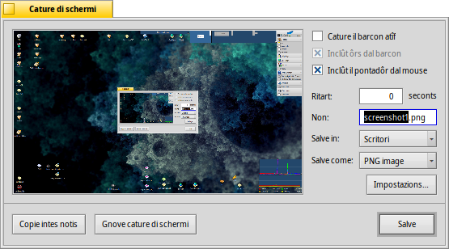

Cature di schermi
Cature di schermi
| Deskbar: | ||
| Posizion: | /boot/system/apps/Screenshot /bin/screenshot | |
| Impostazions: | ~/config/settings/screenshot |
Lis videadis a vegnin fatis o inviant la aplicazion “Cature di schermi” o fracant il tast STAMP.

Intal panel di “Cature di schermi” tu puedis comutâ tra cjapâ dut il schermi o dome il barcon atîf e decidi se cjapâ dentri l'ôr dal barcon e il pontadôr dal mouse. Tu puedis ancje inserî un ritart prime che e vegni caturade la videade.
Sot di che tu stabilissis il non, il formât e la posizion pe videade caturade che a vignaran doprâts cuant che tu fasarâs clic su . Al puest di salvâ il file sul disc tu puedis decidi ancje di fâ cussì di podê tacâ la schermade daurman intune aplicazion, opûr cjapâ une .
Dutis lis impostazions a vegnin tignudis iniments pe prossime volte che tu fasarâs une cature, abilitant chestis scurtis di tastiere utilis:
| STAMP | Al cjape une videade cun zero ritart e al invie il panel di Cature di schermi. | |
| MAIUSC STAMP | Al cjape une videade cence dî nuie (cence vierzi il panel), ma simpri rispietant lis ultimis impostazions dopradis. | |
| CTRL STAMP | Al cjape ancje lui une videade cu lis impostazions salvadis, ma invezit di salvâle come un file, e ven dome copiade intes notis. |
 Cjapâ une cature di schermi dal Terminâl
Cjapâ une cature di schermi dal Terminâl
E esist une aplicazion screenshot(cature di schermi par inglês) speciâl par cjapâ videadis dal Terminal o di un script.
screenshot --help al mostre lis opzions di prime consideradis tant che parametris:
~> screenshot --help
screenshot [OPTIONS] [FILE] Creates a bitmap of the current screen
FILE is the optional output path / filename used in silent mode. An exisiting
file with the same name will be overwritten without warning. If FILE is not
given the screenshot will be saved to a file with the default filename in the
user's home directory.
OPTIONS
-m, --mouse-pointer Include the mouse pointer
-b, --border Include the window border
-w, --window Capture the active window instead of the entire screen
-d, --delay=seconds Take screenshot after the specified delay [in seconds]
-s, --silent Saves the screenshot without showing the application
window
-f, --format=image Give the image format you like to save as
[bmp], [gif], [jpg], [png], [ppm], [tga], [tif]
-c, --clipboard Copies the screenshot to the system clipboard without
showing the application window
Note: OPTION -b, --border takes only effect when used with -w, --window